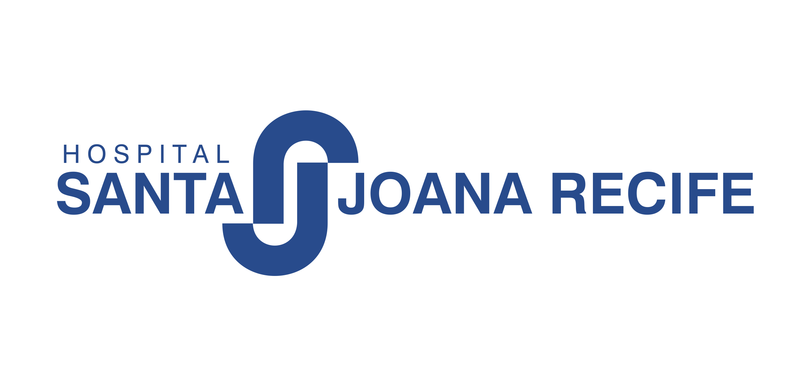
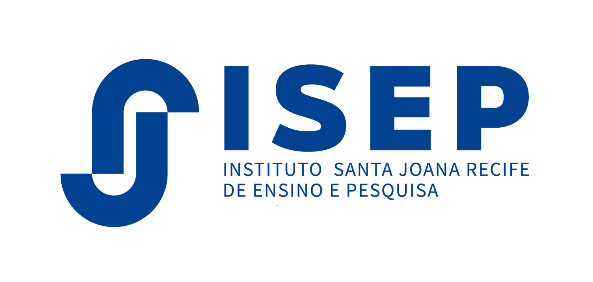
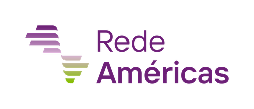
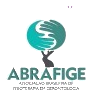
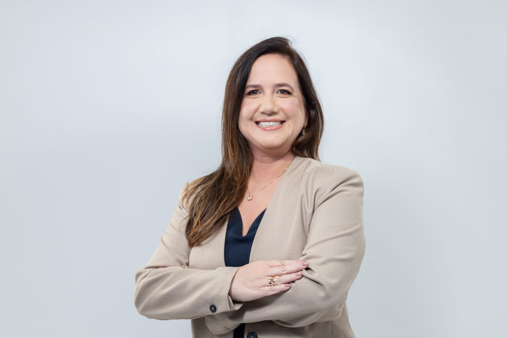
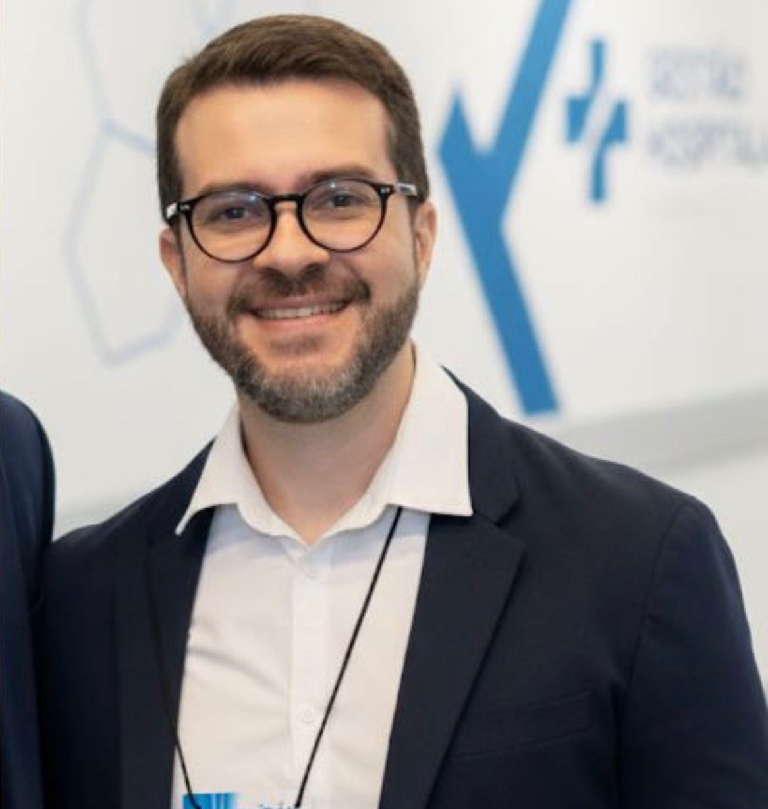
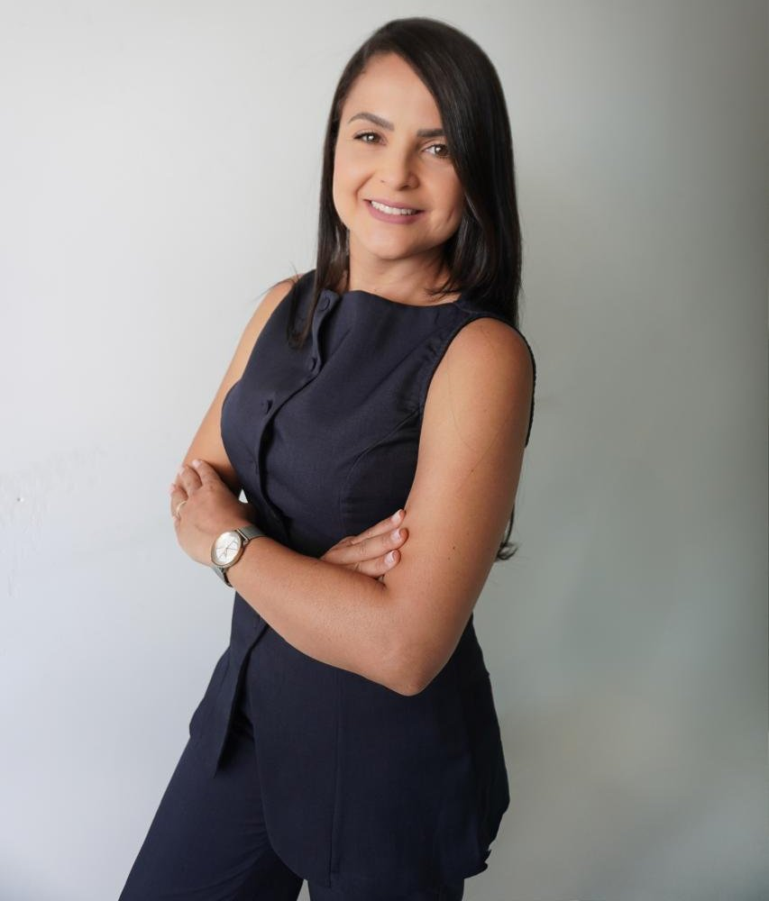
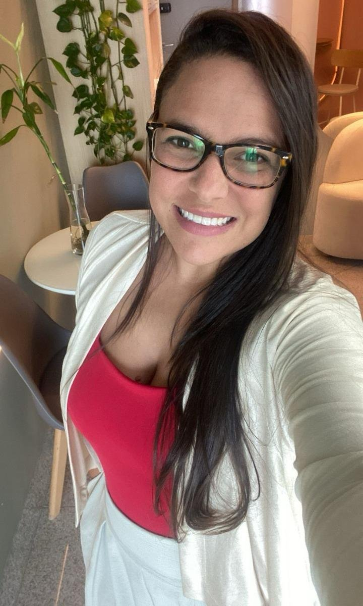

21 e 22 de agosto de 2026
Auditório do Hospital Santa Joana Recife — Graças




O Hospital Santa Joana Recife, o Instituto Santa Joana de Ensino e Pesquisa – ISEP e a Rede Américas promovem o II Simpósio Pernambucano Multidisciplinar de Prevenção de Quedas, um encontro que reúne diferentes especialidades em torno de um dos maiores desafios do cuidado à pessoa idosa: prevenir quedas e suas consequências.
Com olhar verdadeiramente multidisciplinar, o simpósio aborda desde a prevenção primária até a reabilitação, integrando medicina, fisioterapia, enfermagem, nutrição, fonoaudiologia, terapia ocupacional, farmácia e as áreas psicossociais. O evento conta com o apoio institucional da ABRAFIGE e do CREFITO-1, e apoio da RV Prestadora de Serviços e da Escola Doutores.
21 e 22 de agosto de 2026
(sexta e sábado)
Auditório do Hospital Santa Joana Recife — Graças
Oficinas práticas e abertura oficial na sexta-feira (21/08)
Evento presencial e multiprofissional da saúde
A coordenação científica do simpósio está sob responsabilidade de um time multidisciplinar de especialistas:


A programação começa na sexta-feira com oficinas práticas simultâneas, seguidas da abertura oficial e da palestra magna do evento.
| Horário | Atividade | Palestrante |
|---|---|---|
|
14h15 – 17h15 (03 horas) OFICINAS PRÁTICAS (sessões simultâneas) |
||
| 14h15 – 17h15 | DAM no contexto hospitalar: um processo de manutenção e facilitação da mobilidade | Alexsandra SantosFisioterapeuta |
| 14h15 – 17h15 | Realidade Virtual na prevenção de quedas | Amanda PerezFisioterapeuta |
| 14h15 – 17h15 | Estimulação Cognitiva aplicada ao risco de quedas | Pamela NascimentoTerapeuta Ocupacional |
| 17h15 – 18h00 (45 min) |
COFFEE BREAK | |
| 18h00 – 18h20 (20 min) |
ABERTURA OFICIAL DO EVENTO | |
| 18h20 – 19h10 (50 min) |
PALESTRA MAGNA DE ABERTURA Quedas como Síndrome Geriátrica: do Evento Isolado ao Marcador de Fragilidade — o que é imprescindível? |
Alexandre MatosGeriatra |
Programação preliminar, sujeita a alterações.
| Horário | Atividade | Palestrante |
|---|---|---|
| 08h15 – 08h45 (30 min) |
Panorama epidemiológico das quedas no Brasil e no Nordeste: impacto socioeconômico e assistencial | Camila MendesMinistério da Saúde – DF |
|
08h50 – 10h00 (1 hora e 10 min) MESA REDONDA 1 — Prevenção Secundária de Fratura por Fragilidade Óssea em Pessoas Idosas Moderadora: Marina Hazin (Fisioterapeuta) |
||
| 08h50 – 09h05 (15 min) |
Vulnerabilidade clínica e funcional após a fratura na pessoa idosa | Isabelle VioletGeriatra |
| 09h05 – 09h20 (15 min) |
A fratura por fragilidade como marcador de alto risco: o que não pode ser negligenciado | Múcio VazOrtopedista / Cirurgião |
| 09h20 – 09h35 (15 min) |
Reabilitação e prevenção secundária após fratura por fragilidade: o que já sabemos e o que ainda não implantamos? | Alexsandra SantosFisioterapeuta |
| 09h35 – 09h50 (15 min) |
Segurança medicamentosa na pessoa idosa: implicações no risco de quedas e fraturas | Bárbara NunesFarmacêutica |
| 09h50 – 10h00 (10 min) |
DISCUSSÃO | |
| 10h00 – 10h20 (20 min) |
INTERVALO | |
|
10h20 – 11h10 (50 min) PAINEL MULTIDISCIPLINAR — Síndrome Cognitiva Motora e Quedas Moderador: Isaac Newton (Fisioterapeuta) |
||
| 10h20 – 10h35 (15 min) |
Bases Neurocognitivas da Marcha e do Controle Postural | Ana Paula OliveiraFisioterapeuta |
| 10h35 – 10h50 (15 min) |
Avaliação Cognitivo-Motora do Risco de Quedas | Ana Paula OliveiraFisioterapeuta |
| 10h50 – 11h05 (15 min) |
Estratégias Terapêuticas Cognitivo-Motoras na Prevenção de Quedas | Camilla BiancaFisioterapeuta |
| 11h05 – 11h10 (05 min) |
DISCUSSÃO | |
|
11h10 – 11h50 (40 min) MESA REDONDA 2 — Fatores clínicos modificáveis na prevenção de quedas: as contribuições da clínica médica e da endocrinologia Moderador: Renato Leitão (Fisioterapeuta) |
||
| 11h10 – 11h30 (20 min) |
O impacto de fatores nutricionais e uso de medicamentos inapropriados na ocorrência de quedas e quedas graves | Marcela SantosClínica Médica |
| 11h30 – 11h50 (20 min) |
Antes da primeira queda: contribuições da endocrinologia para a prevenção primária | Ana Carla MontenegroEndocrinologista |
|
11h50 – 12h20 (30 min) PAINEL CURTO — Indicadores de Qualidade e Segurança na Prevenção de Quedas |
||
| 11h50 – 12h20 | Indicadores assistenciais · Cultura de segurança · Monitoramento institucional | Stheffany AssunçãoEnfermeira |
| 12h20 – 13h30 (1 h e 10 min) |
ALMOÇO LIVRE | |
|
13h30 – 14h30 (1 hora) MESA MULTIDISCIPLINAR — Correlação entre Disfagia, Inapetência e Quedas Moderadora: Isis Amaral (Fisioterapeuta) |
||
| 13h30 – 13h45 (15 min) |
Síndromes geriátricas associadas à disfagia, inapetência e risco de quedas | Carlos HenriqueGeriatra |
| 13h45 – 14h00 (15 min) |
Inapetência, desnutrição e perda de massa muscular: como o risco de quedas se instala | Priscila VieiraNutricionista |
| 14h00 – 14h15 (15 min) |
Disfagia na pessoa idosa: quando a alimentação se torna um fator de vulnerabilidade | Mariana AmorimFonoaudióloga |
| 14h15 – 14h30 (15 min) |
Da perda muscular à queda: impactos da disfagia e da inapetência na mobilidade e funcionalidade | Marina HazinFisioterapeuta |
|
14h30 – 15h15 (45 min) PALESTRA CIENTÍFICA — Além da capacidade funcional: autoeficácia, confiança funcional e os mecanismos invisíveis do risco de quedas em pessoas idosas |
||
| 14h30 – 15h15 | Além da capacidade funcional: autoeficácia, confiança funcional e os mecanismos invisíveis do risco de quedas em pessoas idosas | Carolina NanqueFisioterapeuta |
| 15h15 – 15h35 (20 min) |
COFFEE BREAK | |
|
15h35 – 16h05 (30 min) PALESTRA TEMÁTICA — A Abordagem da Terapia Ocupacional no Ambiente Hospitalar: Segurança, Funcionalidade e Alta Responsável |
||
| 15h35 – 16h05 | Avaliação centrada no desempenho ocupacional · Organização segura do ambiente hospitalar · Rotinas significativas durante a internação · Planejamento da alta e adaptação domiciliar | Genaína CoutoTerapeuta Ocupacional |
|
16h05 – 16h55 (50 min) MESA INTEGRADA — Aspectos Psicossociais das Quedas: Luto Funcional, Isolamento e Reinserção Comunitária Moderadora: Michelle Santos (Fisioterapeuta) |
||
| 16h05 – 16h20 (15 min) |
Impacto emocional pós-queda | Clara MaiaPsicóloga |
| 16h20 – 16h35 (15 min) |
Restrição social | Luciana KarolineAssistente Social |
| 16h35 – 16h50 (15 min) |
Estratégias de reinserção e rede de apoio | Pamela NascimentoTerapeuta Ocupacional |
| 16h50 – 16h55 (05 min) |
DISCUSSÃO | |
|
16h55 – 17h25 (30 min) PALESTRA TECNOLOGIA — Gerontecnologia: IA da predição à prevenção de quedas |
||
| 16h55 – 17h25 | Gerontecnologia: IA da predição à prevenção de quedas | Amanda PerezFisioterapeuta |
|
17h25 – 18h10 (45 min) MESA DE ENCERRAMENTO — Integração Multidisciplinar na Linha de Cuidado da Pessoa Idosa em Risco de Queda Moderador: Renato Leitão (Fisioterapeuta) |
||
| 17h25 – 17h35 (10 min) |
Síntese dos consensos · Recomendações técnicas · Encaminhamentos institucionais | Danielle FerrazEnfermeira · Santa Joana Recife |
| 17h45 – 17h55 (10 min) |
Síntese dos consensos · Recomendações técnicas · Encaminhamentos institucionais | Eduardo De HolandaGeriatra · IMIP |
| 18h05 – 18h10 (05 min) |
DISCUSSÃO | |
Programação preliminar, sujeita a alterações.
Conheça os palestrantes com presença confirmada. Em breve novos nomes serão anunciados.


O simpósio será realizado no Auditório do Hospital Santa Joana Recife, no bairro das Graças.
Endereço:
Rua Joaquim Nabuco, 200 — Graças
Recife — PE
Use o mapa ao lado para orientação de acesso.
As inscrições para o II Simpósio Pernambucano Multidisciplinar de Prevenção de Quedas estão abertas. Garanta sua vaga pelo Sympla.
Inscreva-sePara dúvidas sobre o simpósio ou suporte às inscrições, entre em contato com a organização:
Endereço:
Rua João Eugênio de Lima, 143 – Sala 01
Boa Viagem – Recife – CEP 51.030-360
Telefone/WhatsApp:
(81) 99985-1712
·
(81) 9232-5922
E-mail:
eventos@lukaplan.com.br
O pré-simpósio acontece na sexta-feira (21/08), com oficinas práticas, abertura oficial e palestra magna. No sábado (22/08) realiza-se a programação científica completa, com mesas redondas, painéis e palestras multidisciplinares.
Consulte valores, lotes e condições de inscrição diretamente na página oficial do evento no Sympla.